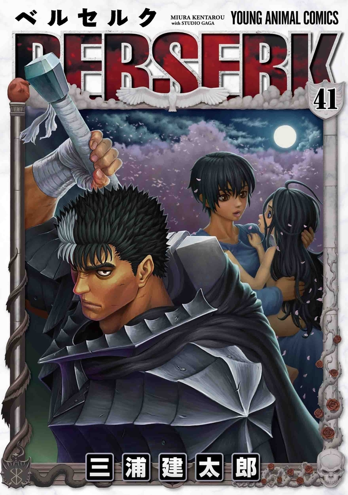
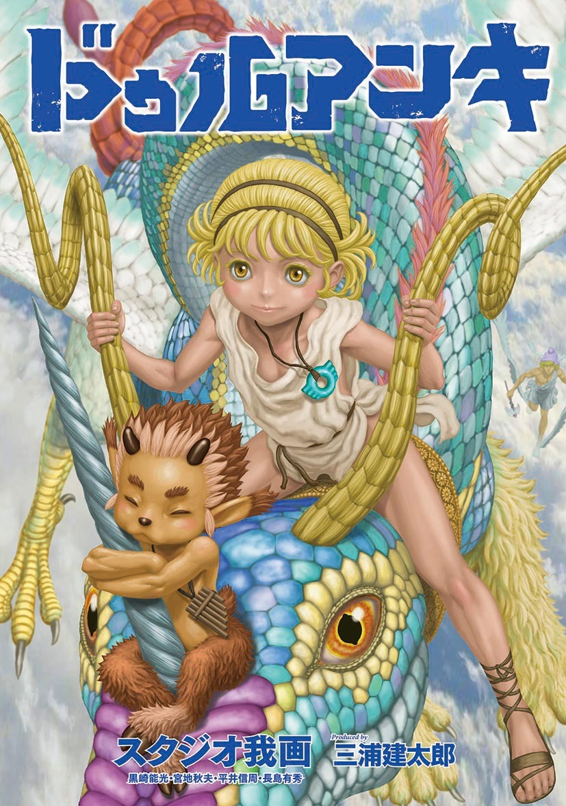
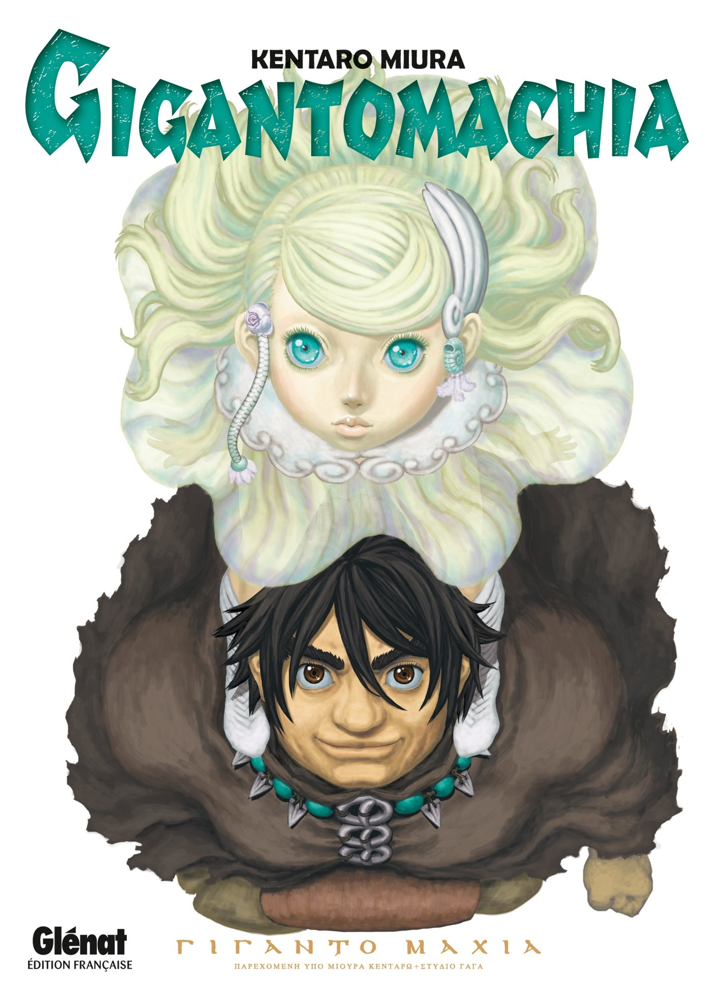

Kentarō Miura foi um mangaká japonês. Ele era mais conhecido por sua aclamada série de fantasia sombria Berserk, que começou a ser publicado em 1989 e se estendeu até a data da morte de Miura, em 2021.
Em 2021, Berserk tinha mais de 50 milhões de cópias em circulação, tornando-se uma das séries de mangá mais vendidas de todos os tempos. Em 2002, Miura foi consagrado com o Prêmio Cultural Osamu Tezuka.
Berserk é uma série de mangá escrita e ilustrada por Kentaro Miura. Situado em um mundo de fantasia sombria inspirado na Europa medieval, a história gira em torno de Guts, um solitário mercenário, e Griffith, o líder de um bando de mercenários chamado de "Bando do Falcão".
Duranki é uma série de mangá japonesa escrita e produzida por Kentaro Miura e ilustrada por seu estúdio de mangá pessoal, Studio Gaga. Inspirada na estética dos antigos mitos gregos e mesopotâmicos, a história segue um protagonista sem gênero chamado Usumgal que vive em um mundo mitológico.
Gigantomachia é o título de um mangá one-shot escrito e ilustrado por Kentaro Miura. Foi serializado pela revista Young Animal entre 2013 até 2014, e publicado em volume único em formato tankōbon pela editora Hakusensha em 29 de julho de 2014.
